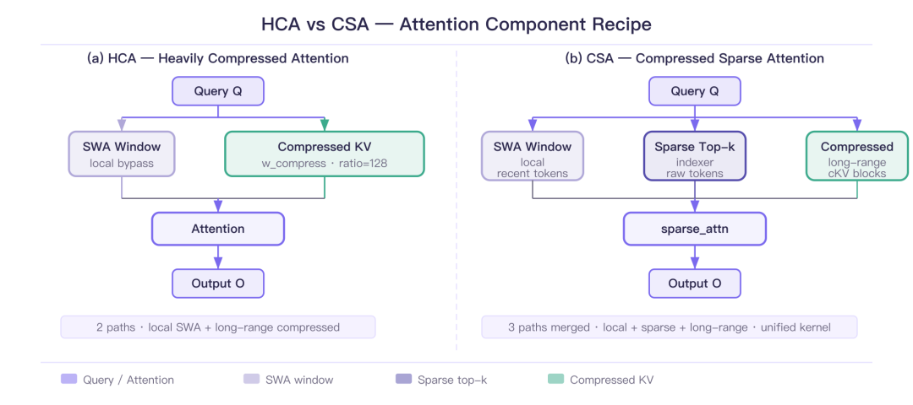
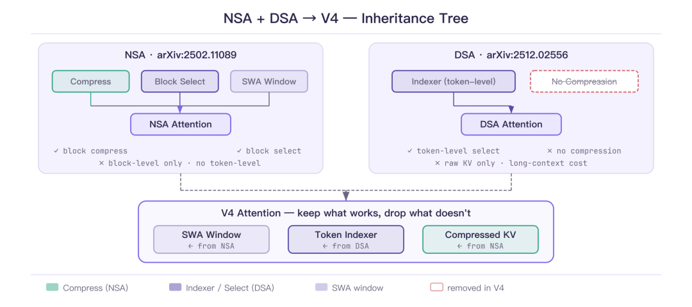
def ScaledDotProductionAttention(Q, K, V, M):
S = Q @ K.transpose(-2, -1)
if M != None:
S = S.masked_fill(M == False, float('-inf'))
P = F.softmax(S, dim = -1)
Z = P @ V
return Z
M = torch.ones(bsz, seq_len, seq_len)
Z = ScaledDotProductionAttention(X, X, X, M)
print(Z.shape) # torch.Size([2, 256, 512])shape = [bsz, seq_len, seq_len]
M_random = torch.randint(
0, 2, size=shape, dtype=torch.bool)
O_random_mask = ScaledDotProductionAttention(
X, X, X, M_random)
print((M_random.int())[0, :2, :10])
# tensor([[0, 1, 0, 0, 0, 0, 0, 1, 1, 0],
# [1, 0, 0, 0, 1, 0, 1, 1, 0, 1]],
# dtype=torch.int32)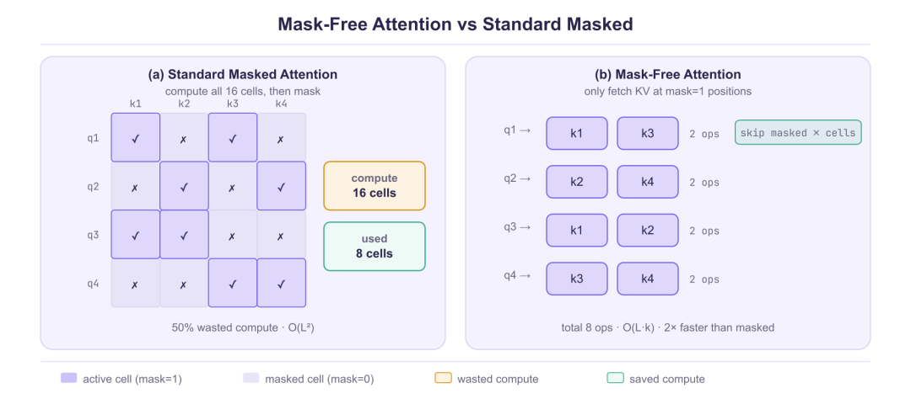
def SingleQuerySDPA(q, K, V):
S = q @ K.t()
P = F.softmax(S, dim=-1)
Z = P @ V
return Zclass AttentionFreeMask(nn.Module):
def __init__(self, args):
super().__init__()
self.Wq = nn.Linear(dim, n_heads * head_dim, bias=False)
self.Wk = nn.Linear(dim, n_kv_heads * head_dim, bias=False)
self.Wv = nn.Linear(dim, n_kv_heads * head_dim, bias=False)
self.Wo = nn.Linear(dim, dim, bias=False)
def forward_free_mask(self, X, mask):
B, L, D = X.shape
Q, K, V = self.Wq(X), self.Wk(X), self.Wv(X)
Z = torch.zeros_like(Q)
for i in range(B):
for j in range(L):
idx = torch.where(mask[i, j] != 0)[0].tolist()
q = Q[i,[j], :]
K_ = K[i, idx, :]
V_ = V[i, idx, :]
Z[i,j,:] = SingleQuerySDPA(q, K_, V_)
O = self.Wo(Z)
return O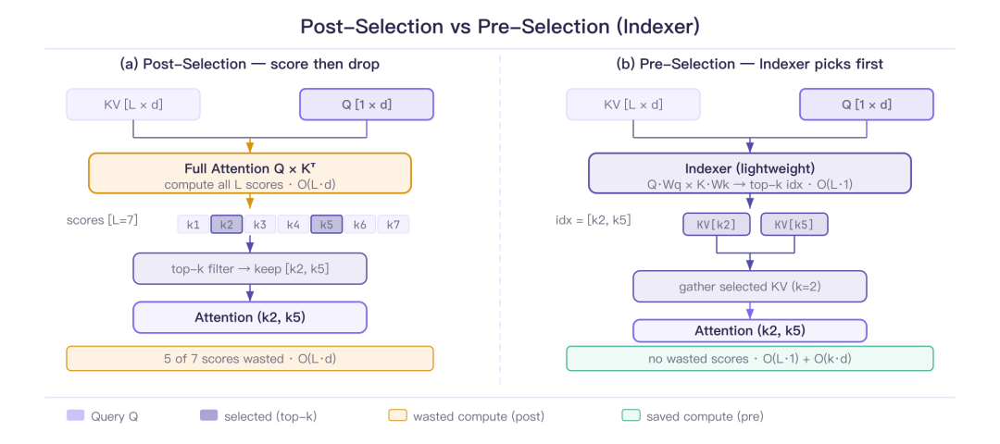
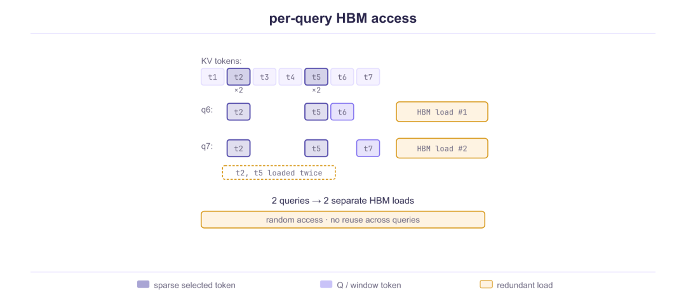
class AttentionTopK(nn.Module):
def forward(self, X, topk=10, is_post=True):
B, L, D = X.shape
Q, K, V = self.Wq(X), self.Wk(X), self.Wv(X)
Z = torch.zeros_like(Q)
for i in range(B):
for j in range(L):
if is_post:
S = Q[i,[j], :] @ K[i].t()
# ... select top-k from S
else:
# Pre: Indexer 先选 KV
S = torch.randn(1, L) # 模拟评分
_, idx = torch.topk(S, topk)
idx = idx[0].tolist()
q = Q[i,[j], :]
K_ = K[i, idx, :]
V_ = V[i, idx, :]
Z[i,j,:] = SingleQuerySDPA(q, K_, V_)
O = self.Wo(Z)
return O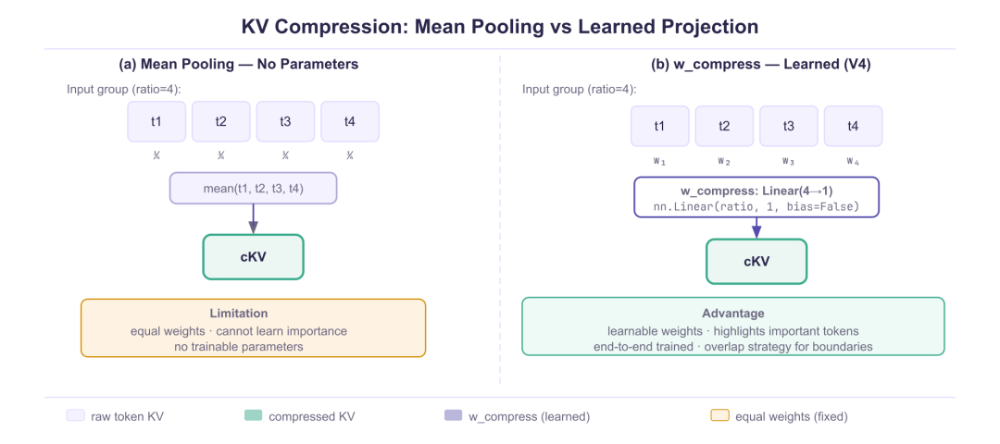
class AttentionCompress(nn.Module):
def forward(self, X, compress_ratio):
B, L, D = X.shape
Q, K, V = self.Wq(X), self.Wk(X), self.Wv(X)
c, n_c = compress_ratio, L // compress_ratio
if compress_ratio != 0:
# mean-pooling 压缩
K_ = K.reshape(B, n_c, c, D).mean(dim=2)
V_ = V.reshape(B, n_c, c, D).mean(dim=2)
Z = ScaledDotProductionAttention(Q, K_, V_, None)
O = self.Wo(Z)
return O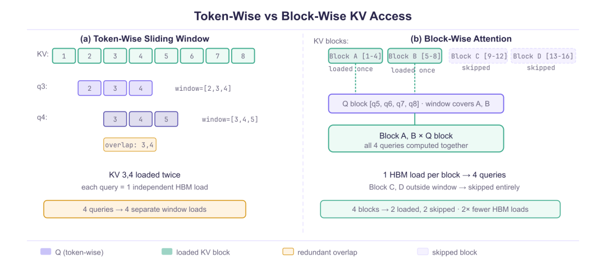
class AttentionSlidingWindow(nn.Module):
def forward(self, X, window_size):
B, L, D = X.shape
Q, K, V = self.Wq(X), self.Wk(X), self.Wv(X)
Z = torch.zeros_like(Q)
for i in range(B):
for j in range(L):
left = max(j, j - window_size)
right = min(j, j + window_size)
q = Q[i,[j], :]
K_ = K[i, left:right, :]
V_ = V[i, left:right, :]
Z[i,j,:] = SingleQuerySDPA(q, K_, V_)
O = self.Wo(Z)
return Oclass Compressor(nn.Module):
def __init__(self, compress_ratios, dim):
super().__init__()
self.compress_ratios = compress_ratios
self.w_compress = nn.Linear(
compress_ratios, 1, bias=False)
def forward(self, X):
B, L, D = X.shape
c, n_c = self.compress_ratios, L // c
if self.compress_ratios > 1:
X_ = X.reshape(B, n_c, c, D)
X_ = self.w_compress(
X_.transpose(2,3))[...,0]
return X_bsz, seq_len = 2, 8192
args.compress_ratios = 4
compressor = Compressor(4, args.dim)
K_ = compressor(K) # [B, 2048, D]
V_ = compressor(V)
O = torch.zeros_like(Q)
for i in range(bsz):
for j in range(seq_len):
j_ = j // args.compress_ratios
K_c, V_c = K_[i, :j_], V_[i, :j_]
O[i,j] = Q[i, [j]] @ K_c.T @ V_cclass Indexer(nn.Module):
def __init__(self, args):
super().__init__()
dim = args.dim
# 简化版：投影到1维做点积评分
self.Wk_light = nn.Linear(dim, 1, bias=False)
self.Wq_light = nn.Linear(dim, 1, bias=False)
def forward(self, Q, K, topk):
Q_ = self.Wq_light(Q)
K_ = self.Wk_light(K)
S = Q_ @ K_.transpose(-2, -1)
_, idx = torch.topk(S, topk, dim=-1)
return idxQ = torch.randn(bsz, seq_len, args.dim)
K = torch.randn(bsz, seq_len, args.dim)
V = torch.randn(bsz, seq_len, args.dim)
args.compress_ratios = 4
compressor = Compressor(4, args.dim)
K_ = compressor(K)
V_ = compressor(V)
indexer = Indexer(args)
idx = indexer(Q, K, args.attn_top_k)
z = torch.zeros_like(Q)
for i in range(bsz):
for j in range(seq_len):
sparse_ids = idx[i, j]
# 稀疏 KV 注意力
z[i,[j]] += attn(Q[i,[j]],
K[i, sparse_ids], V[i, sparse_ids])
# 压缩 KV 注意力
z[i,[j]] += attn(Q[i,[j]],
K_[i,:], V_[i,:])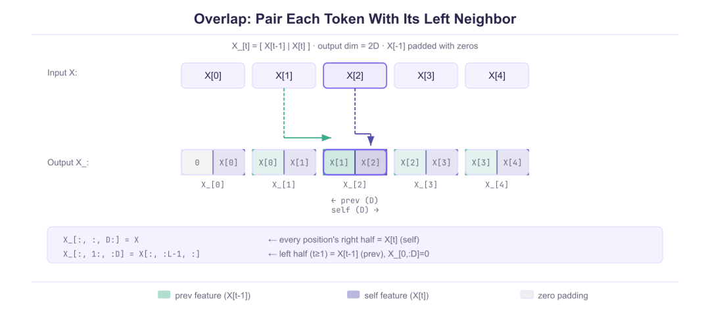
def overlap(X):
B, L, D = X.shape
X_ = torch.zeros(B, L, D*2)
X_[:, :, D:] = X # 当前段
X_[:, 1:, :D] = X[:, :L-1, :] # 前一段
return X_
overlap_flag = 1
coff = 1 + overlap_flag
K_ = overlap(compressor(K))
V_ = overlap(compressor(V))
if overlap_flag:
_, L_c, _ = K_.shape
K_ = K_.reshape(bsz, L_c, args.dim, coff).sum(dim=-1)
V_ = V_.reshape(bsz, L_c, args.dim, coff).sum(dim=-1)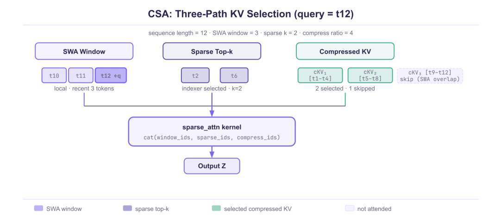
win = 128
z = torch.zeros_like(Q)
for i in range(bsz):
for j in range(seq_len):
sparse_ids = idx[i, j]
left = max(0, j - win)
right = min(seq_len, j + win)
K_mix = torch.cat((
K[i, sparse_ids], # Top-K
K[i, left:right], # 滑窗
K_[i, :])) # 压缩 KV
V_mix = torch.cat((
V[i, sparse_ids],
V[i, left:right],
V_[i, :]))
z[i,j] = attn(Q[i,[j]], K_mix, V_mix)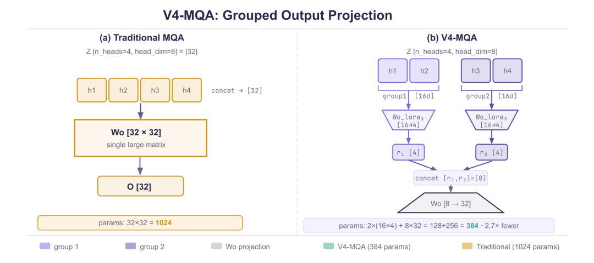
class MQA(nn.Module):
def __init__(self, args, o_lora_rank, o_groups):
super().__init__()
dim = args.dim
head_dim = args.head_dim
self.n_heads = args.n_heads
self.n_kv_heads = 1
self.Wq = nn.Linear(dim,
self.n_heads * head_dim, bias=False)
self.Wc = nn.Linear(dim, head_dim, bias=False)
self.Wk = nn.Linear(head_dim, head_dim, bias=False)
self.Wv = nn.Linear(head_dim, head_dim, bias=False)
self.Wo_a = nn.Linear(
self.n_heads * head_dim // o_groups,
o_groups * o_lora_rank, bias=False)
self.Wo_b = nn.Linear(
o_lora_rank * self.n_heads, dim, bias=False) def forward(self, X, mask):
B, L, D = X.shape
Q = self.Wq(X)
K = self.Wk(self.Wc(X))
V = self.Wv(self.Wc(X))
Q = Q.reshape(B, L, self.n_heads,
-1).transpose(1, 2)
K = K.reshape(B, L, 1, -1).transpose(1, 2)
V = V.reshape(B, L, 1, -1).transpose(1, 2)
Z = ScaledDotProductionAttention(
Q, K, V, mask)
d = self.n_heads * D // self.o_groups
Z = Z.reshape(B, L, self.o_groups, d)
Z = self.Wo_a(Z) # 分组降维
Z = Z.reshape(B, L, -1)
O = self.Wo_b(Z) # 升维回 dim
return OWo_a = torch.ones(2, 4, 3) # 2 groups
X = torch.ones(5, 4)
Wo_a[0] *= 2
Wo_a[1] *= 3
Y = X @ Wo_a # [2, 5, 3]
Y1 = X @ Wo_a[0] # [5, 3]
Y2 = X @ Wo_a[1] # [5, 3]
print(f'shapes: {Y.shape} | {Y1.shape} | {Y2.shape}')
print(torch.norm(Y - torch.stack([Y1, Y2], dim=0)))
# 0 -- 数学等价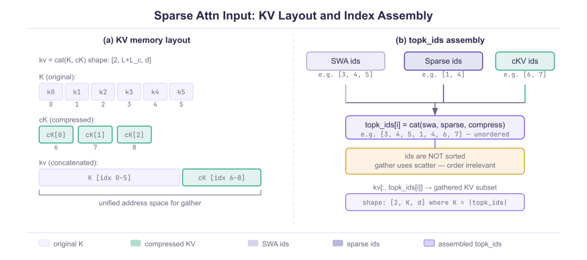
if __name__ == "__main__":
L, H, d = 4, 8, 32
L_compressed = 6
q = torch.randn(L, H, d)
kv = torch.randn(
2, L + L_compressed, d)
num_win_ids = 2
num_sparse_ids = 3
num_compressed_ids = 1
K = num_win_ids + num_sparse_ids \
+ num_compressed_ids
topk_ids = torch.randint(
0, L + L_compressed, (L, K))
out = sparse_linear_attn_torch(
q, kv, topk_ids, block=3)
print(out.shape) # [4, 8, 32]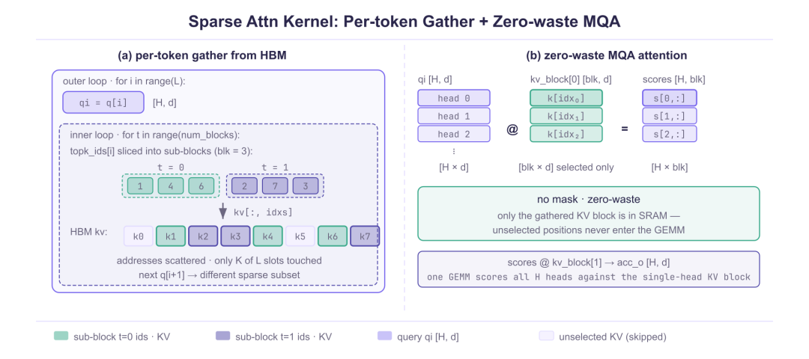
def sparse_linear_attn_torch(
q, kv, topk_ids, block=64):
L, H, d = q.shape
K_topk = topk_ids.shape[1]
num_blocks = math.ceil(K_topk / block)
o = torch.zeros(L, H, d)
for i in range(L): # 逐 query
qi = q[i] # [H, d]
acc_o = torch.zeros(H, d)
for t in range(num_blocks): # 分块
start = t * block
end = min(start + block, K_topk)
idxs = topk_ids[i, start:end]
kv_block = kv[:, idxs] # 非连续
scores = qi @ kv_block[0].T
acc_o += scores @ kv_block[1]
o[i] = acc_o
return o